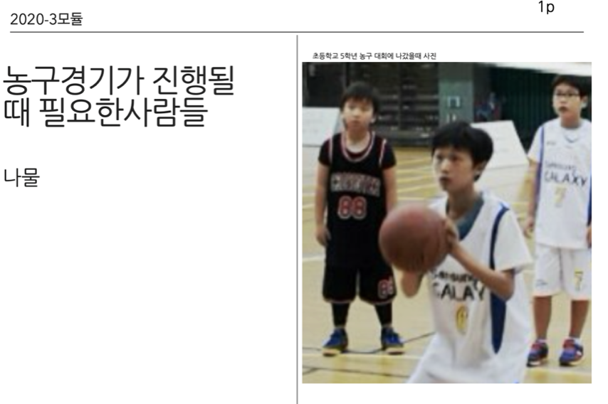
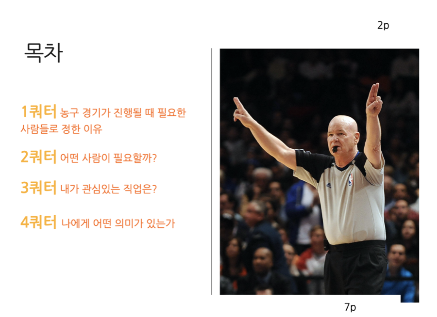
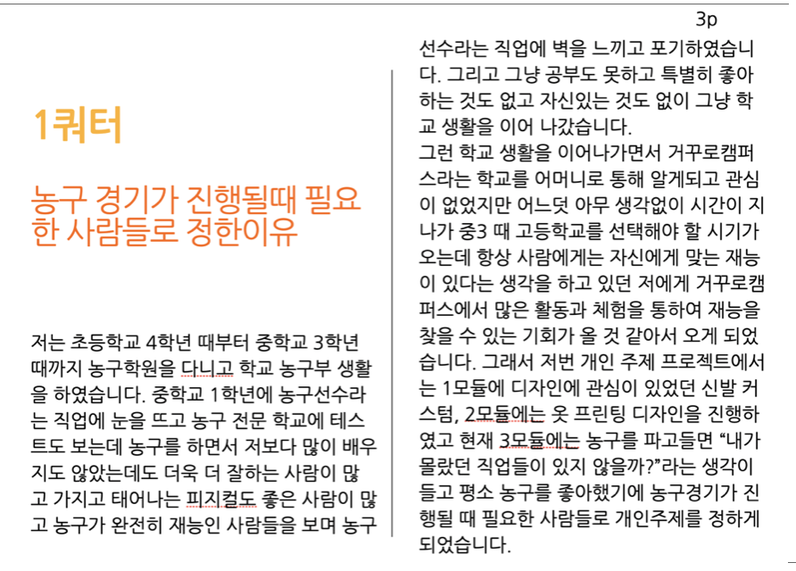
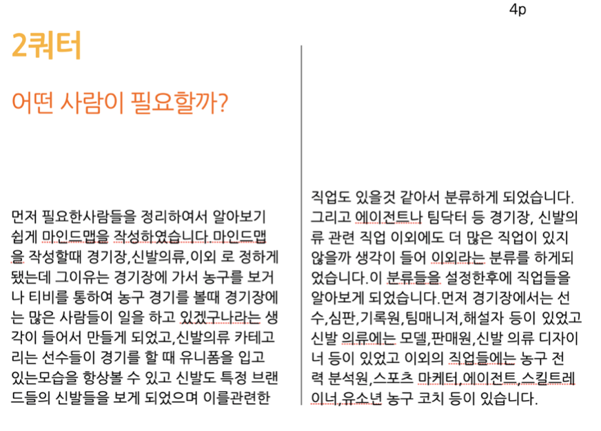
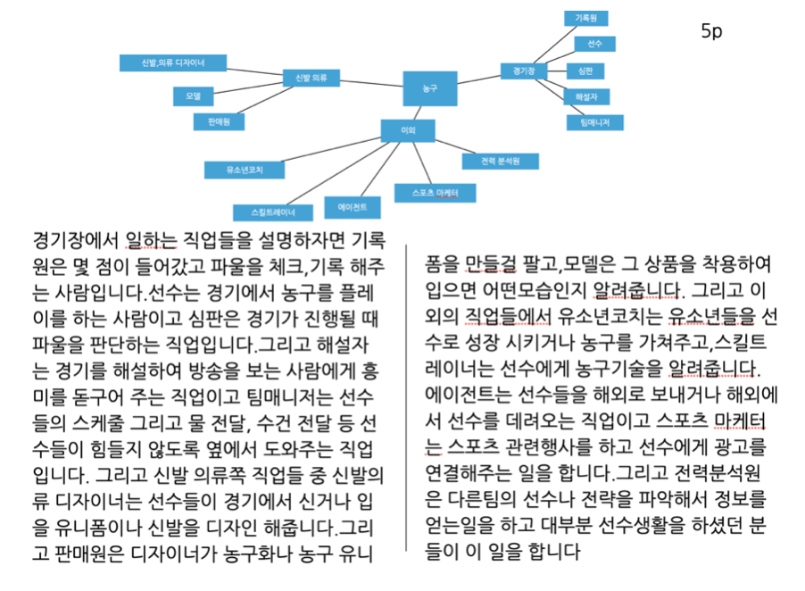
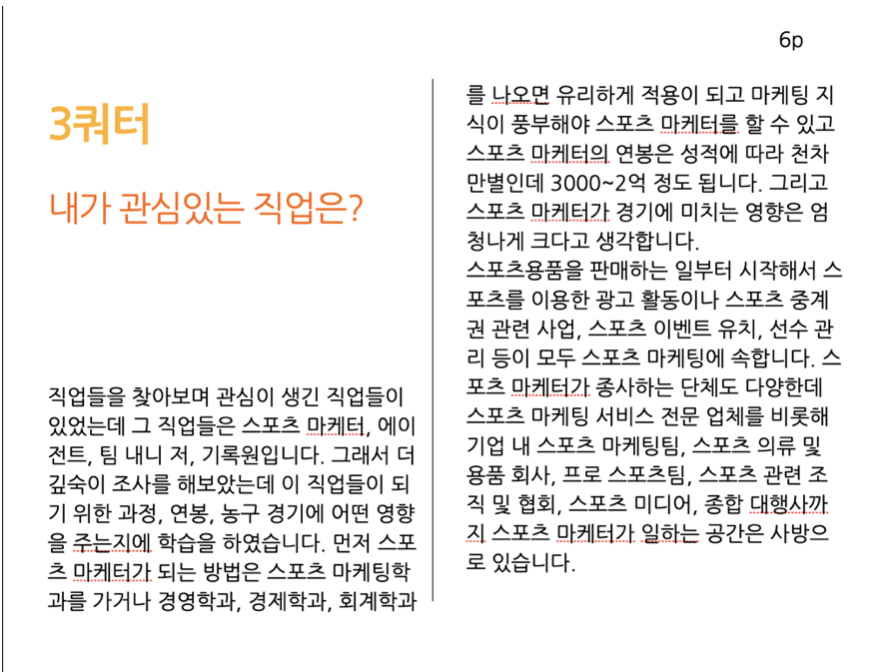
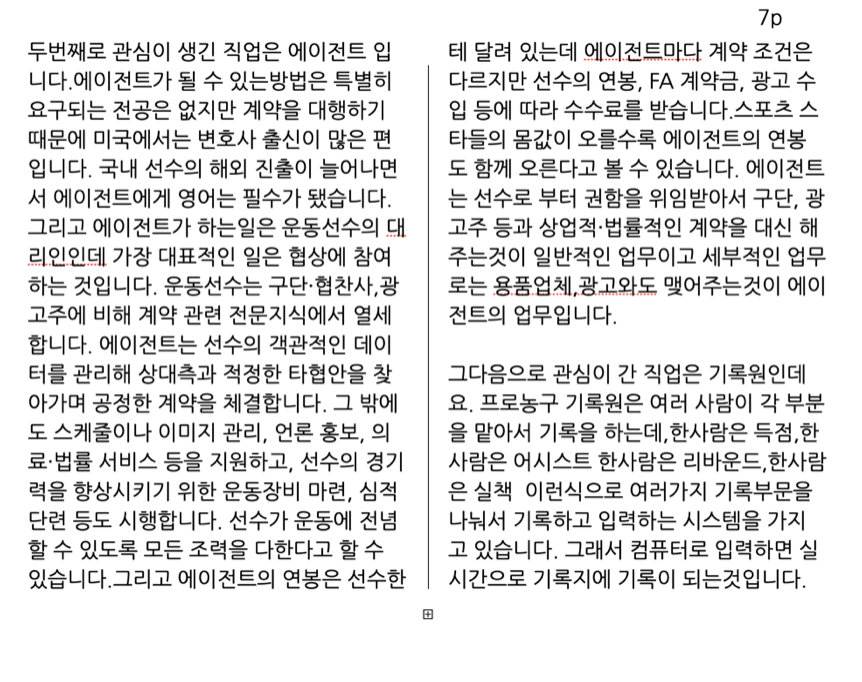
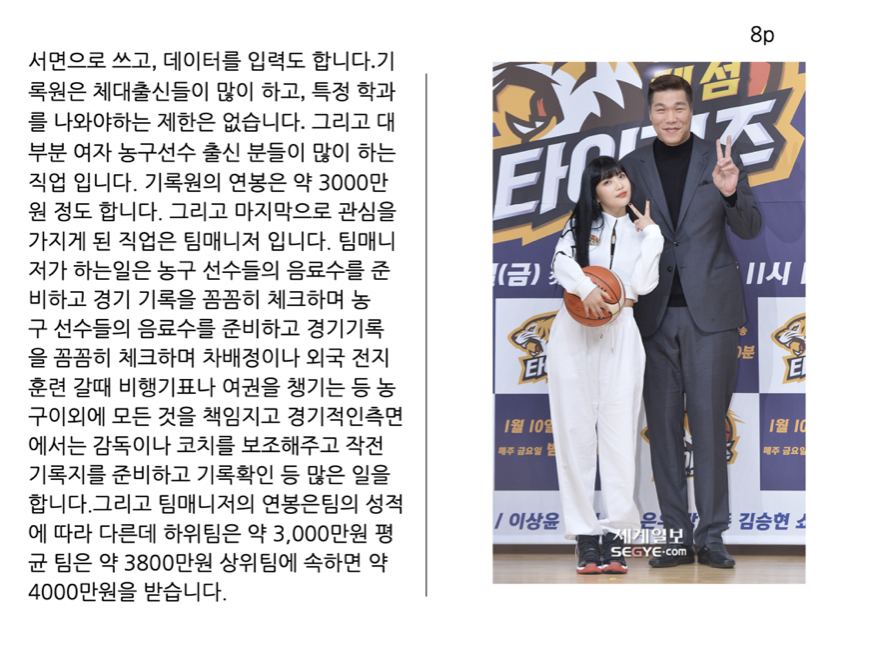
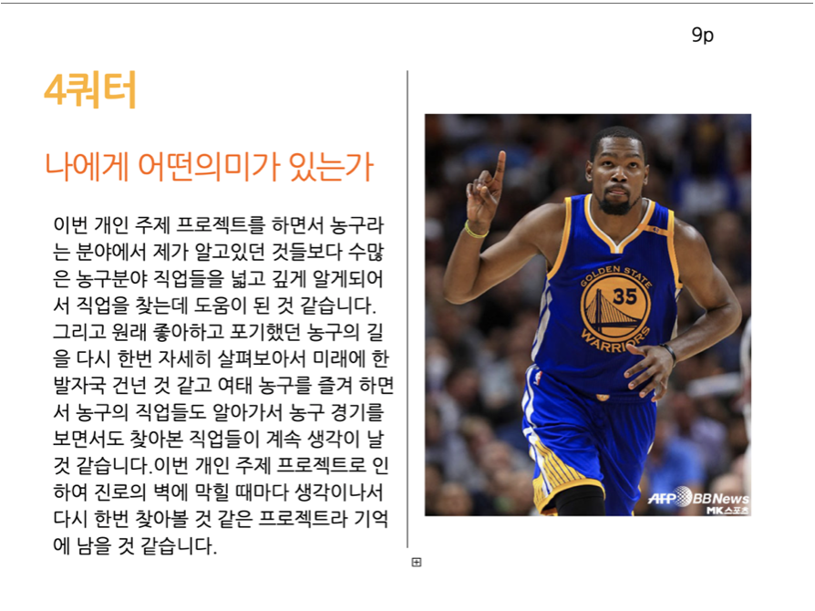
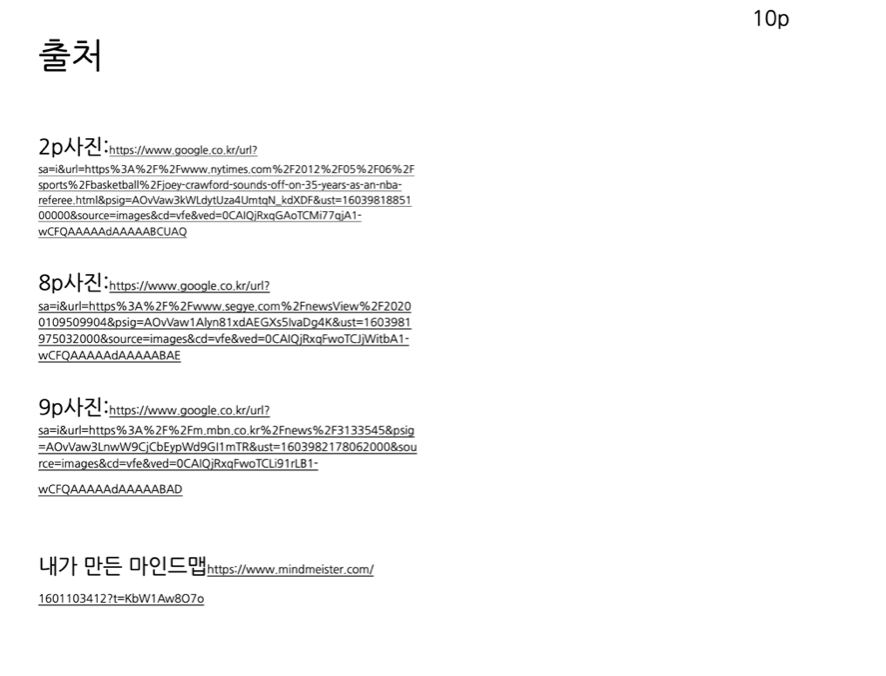

3M 농구직업들에 대해 알아보자
3M에서는 이전 1,2모듈보다는 더 성장한것같습니다.
E북을 작성할줄 알게되었고,시간낭비도 크게하지않았습니다.
그리고 제가 좋아했었던 농구에대한 주제여서 더 재미있게 한 것 같습니다.
농구에 대한 직업들로 찾아본것은 엄청나게 많았는데 저는 그중에서
스포츠 에이전트,팀매니저,기록원,스포츠 마케터였습니다.
그래서 이4가지는 더욱더 깊숙히 조사를하였고 조사를 하면서
몰랐던것들을 정말 많이 알아갔고 제가 걸어온 농구의 길을
한번 돌아보는 것같아서 정말 뜻깊었던것 같습니다